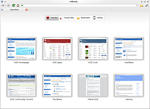
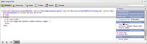

rekonq
Dieser Artikel wurde für die folgenden Ubuntu-Versionen getestet:
Ubuntu 14.04 Trusty Tahr
Zum Verständnis dieses Artikels sind folgende Seiten hilfreich:
rekonq  ist ein Webbrowser der KDE Community auf Basis von WebKit, der von Apple Computers abgespaltenen "Rendering Engine" des KDE Browsers Konqueror. Ähnlich wie QupZilla oder Arora basiert rekonq auf dem Demo-Browser der Qt-Bibliotheken, jedoch mit dem Ziel, eine gute Integration mit KDE Anwendungen zu erreichen. So werden z.B. die Lesezeichen und Webcookies mit Konqueror geteilt. Von Kubuntu 10.10 Maverick Meerkat bis Kubuntu 13.10 Saucy Salamander war Rekonq der Standardbrowser und ersetzte damals Konqueror. Ab Trusty Tahr wurde Rekonq durch Firefox als Standardbrowser ersetzt.
ist ein Webbrowser der KDE Community auf Basis von WebKit, der von Apple Computers abgespaltenen "Rendering Engine" des KDE Browsers Konqueror. Ähnlich wie QupZilla oder Arora basiert rekonq auf dem Demo-Browser der Qt-Bibliotheken, jedoch mit dem Ziel, eine gute Integration mit KDE Anwendungen zu erreichen. So werden z.B. die Lesezeichen und Webcookies mit Konqueror geteilt. Von Kubuntu 10.10 Maverick Meerkat bis Kubuntu 13.10 Saucy Salamander war Rekonq der Standardbrowser und ersetzte damals Konqueror. Ab Trusty Tahr wurde Rekonq durch Firefox als Standardbrowser ersetzt.
Die Entwicklung von rekonq scheint allerdings zu stagnieren. Die neuste Version ist 2.4.2 und datiert auf Januar 2014. Dieser Version ist auch für Trusty und neuer in den Universe Paketquellen enthalten.
Installation¶
Rekonq lässt sich bei Bedarf über folgendes Paket installieren [1]:
rekonq (universe)
 mit apturl
mit apturl
Paketliste zum Kopieren:
sudo apt-get install rekonq
sudo aptitude install rekonq
Nach der Installation findet sich rekonq im K-Menü unter "Internet → Rekonq".
Benutzung¶
rekonq ist ein sehr schlichter und schneller Browser. Dies ist auch in der Benutzerschnittstelle ersichtlich. So wird zum Beispiel auf eine Menüleiste ganz verzichtet. Alle wichtigen Funktionen sind über ein ausklappbares Menü als Schaltfläche in der Werkzeugleiste erreichbar. Genauso werden die Lesezeichen als ausklappbares Menü angezeigt, lassen sich aber auch als zusätzliche Werkzeugleiste anzeigen.
Über die KDE Systemeinstellungen unter "Standardkomponenten → Webbrowser" kann rekonq als Standard-Browser eingestellt werden, d.h. jeder Link in einer KDE-Anwendung wird in rekonq statt mit Konqueror geöffnet. Im Gegensatz zu Konqueror ist rekonq kein KPart-Browser und kann daher nicht als Dateimanager oder Ähnliches verwendet werden.

Startseite¶
rekonq verwendet eine spezielle Startseite, welche eine Vorschau einiger "Favoriten"-Webseiten anzeigt. Diese Seite kann aber auch eine Übersicht über geschlossene Unterfenster, die Lesezeichen sowie den Verlauf geben. Diese Seite kann angezeigt werden, wenn rekonq gestartet wird sowie wenn ein neues Unterfenster geöffnet wird. Über "Einstellungen → rekonq einrichten… → Allgemein" kann dieses Verhalten geändert werden. So kann auch die letzte Sitzung beim Start wiederhergestellt werden oder eine klassische Startseite geladen werden. Auch für ein neues Unterfenster lässt sich einstellen, ob
die Favoriten-Seite
eine leere Seite oder
die klassische Startseite
geladen werden soll.
Lesezeichen¶
Wie bereits erwähnt, verwendet rekonq die Lesezeichen von Konqueror und somit auch die gleiche Verwaltung. Über das Lesezeichen-Menü in der Werkzeugleiste lässt sich die Verwaltung mit "Lesezeichen bearbeiten" öffnen. Neue Lesezeichen können über das Lesezeichensymbol in der Adressleiste angelegt werden.
Eine Lesezeichen-Werkzeugleiste kann in dem Einstellungsmenü über den Eintrag "Lesezeichen-Werkzeugleiste" an- bzw. ausgeschaltet werden. Zusätzlich gibt es über den Menüeintrag "Lesezeichen-Seitenleiste" (Tastenkürzel Strg + ⇧ + B ) eine Lesezeichen-Seitenleiste, welche sich frei platzieren und auch verselbständigen lässt.
Unterfenster¶
Wie andere moderne Browser verwendet rekonq ebenfalls Unterfenster (Tabs). Als Besonderheit sieht man eine kleine Vorschau der Seite, wenn man mit der Maus über ein inaktives Unterfenster in der Leiste fährt. Einen neues Unterfenster kann man über das Tastenkürzel
Strg +
T öffnen oder über die Schaltfläche in der Tableiste. Über  auf einen Link wird dieser als neues Unterfenster geöffnet. Über das Kontextmenü auf der Unterfensterleiste oder einen Eintrag für ein Unterfenster stehen weitere Optionen zur Verfügung.
auf einen Link wird dieser als neues Unterfenster geöffnet. Über das Kontextmenü auf der Unterfensterleiste oder einen Eintrag für ein Unterfenster stehen weitere Optionen zur Verfügung.
Webkürzel¶
rekonq unterstützt die gleichen Webkürzel wie Konqueror. Hierüber lässt sich sehr bequem auf speziellen Seiten suchen. Interessant ist natürlich, dass die Webkürzel auch in KRunner funktionieren und man somit eine Seite sehr schnell auch starten kann, wenn noch kein Browser geöffnet ist. Die Konfiguration kann über "rekonq einrichten... -> Suchmaschinen" vorgenommen werden.
Privatsphäre¶
Als WebKit-Browser unterstützt rekonq auch Private browsing, d.h. es werden z.B. keine Einträge zum Verlauf hinzugefügt und Cookies werden nicht gespeichert. Diesen Modus kann man über den Eintrag "Neues privates Fenster" im Einstellungsmenü aktivieren und auch wieder beenden. Während der Modus aktiviert ist, wird die Adressleiste grau hinterlegt, und im Fenstertitel erscheint der Zusatz "(Private Browsing)".
Über den Eintrag "Extras → Private Daten löschen…" im Einstellungsmenü können persönliche Daten wie der Verlauf und die Cookies gelöscht werden. Als Hilfsmittel zum Bereinigen der Historie eignet sich auch Sweeper

Webentwicklung¶
Für Web-Entwickler bringt rekonq den in WebKit integrierten "Web-Inspektor" mit. Dieser erlaubt es, im Document Object Model der geladenen Webseite zu navigieren und Werte direkt zu ändern. Über "Extras → Inspizieren" wird dieser geöffnet und unterhalb der Webseite platziert, lässt sich jedoch frei bewegen oder verselbständigen.
Werbefilter¶
rekonq verwendet den gleichen Werbefilter wie Konqueror. Die Konfiguration kann über "Extras → Werbefilter" vorgenommen werden. Zusätzlich gibt es die Möglichkeit, Flash Plugins standardmäßig nicht zu laden. Anstelle eines Plugins wird dann eine Schaltfläche "Load Plugin" angezeigt. Dieses Verhalten kann in den Einstellungen von rekonq im Modul "WebKit" aktiviert werden.
Links¶
Webbrowser
 Übersicht
ÜbersichtKonqueror - der Klassiker in KDE und Vorbild für rekonq
QupZilla - schlanker auf Qt und WebKit basierender Browser
Arora - ein weiterer auf dem QtWebKit Demobrowser basierender Browser
- Erstellt mit Inyoka
-
 2004 – 2017 ubuntuusers.de • Einige Rechte vorbehalten
2004 – 2017 ubuntuusers.de • Einige Rechte vorbehalten
Lizenz • Kontakt • Datenschutz • Impressum • Serverstatus -
Serverhousing gespendet von